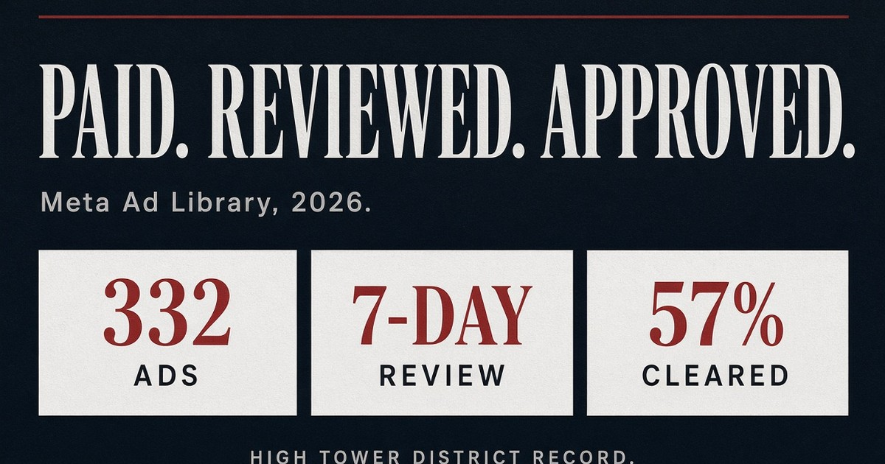
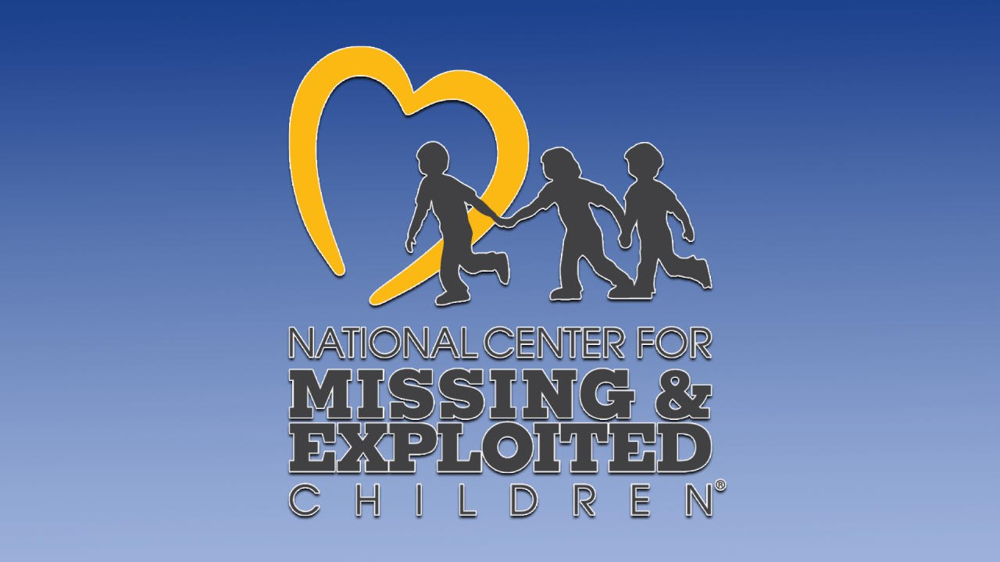

332
CSAM ads TTP logged in 2026
250+
After Meta cited new detection
57%
Reported live ads Meta said did not violate
7 days
Review lag after researchers flagged live ads
What the record says
On September 8, 2026, the Tech Transparency Project published a second wave of findings. WIRED, Ars Technica, BBC, and Bloomberg carried the same core facts.
Last month TTP and WIRED documented about 50 paid ads on Meta platforms that included AI-generated child sexual abuse material. Meta said most of those ran before it rolled out new moderation systems.
Then more ran. WIRED reported more than 250 additional ads after August began, for a broader total of more than 350 since late 2025. TTP’s detailed 2026 sample is 332 ads in the Ad Library.
This is not user graffiti. Paid ads on Meta are supposed to pass a review against the company’s own rules on child exploitation. The company collected the spend. The ads reached people in the United States, the European Union, the United Kingdom, India, and Australia.
Real children, not only generated faces
TTP matched ads to photographs of real minors taken from the open web. WIRED confirmed that one source image came from the official site of a European royal family. Researchers are not naming that child. They should not be named here either.
TTP director Katie Paul told WIRED the problem is not only synthetic imagery. Some source photos appear to have been lifted from social posts and official pages, then run through tools that produce sexual videos. The Justice Department has said AI-generated child sexual abuse material is still child sexual abuse material.
Researchers identified four minors whose images were used. Three of them are in the United States. One source was a teen with an influencer account on a Meta platform.
This page will not describe the videos. The public record already does that in more detail than a neighborhood feed needs.
The review that said no violation
TTP reported 129 live ads to Meta using the child-exploitation categories. In 73 cases, 57 percent, Meta answered that the ad did not go against advertising standards. In 43 percent Meta said the ad was already gone. Six of those were still visible in the Ad Library.
WIRED saw screenshots of the lag. Some reports sat about a week. While they sat, the ads kept collecting views. Identical copies were treated differently. One copy came down. The twin stayed up.
By September 1, 183 of the 332 sample ads were gone from the Ad Library. On September 2 TTP sent the rest. Meta pulled the remaining 149 within hours. Policy labels on some removed ads first pointed to adult rules, not child-exploitation rules, and were revised after reporters asked.
Where the ads pointed
Of the 332 ads, 298 sent users toward AI image or video apps. TTP said 253 of those apps came from China-based developers. Many were the class of tools sold as “nudify” products. Meta says it bans that promotion.
Several ads were placed through Meta’s own China resellers, including Guangdong Advertising Group (GIMC), MeetSocial, and BlueFocus. TTP describes those firms as top-tier partners. They did not answer the researchers.
Meta told reporters most of the ads had fewer than 200 impressions and that total spend on the sample was under $5,000. TTP also logged reach above 29,000 accounts in the EU and 6,800 in the UK. Two ads crossed 2,500 accounts in the EU alone. One ad grew from a handful of views to more than 300 after it had already been reported.
India is a separate failure on the same pipeline. 84 ads in the TTP set ran there. 78 of those ran after New Delhi ordered CSAM ads off the platforms and met with Meta officials. Australia’s sample in the same set was 120 ads. The U.S. share was 262, about 80 percent.
What officials said this week
Michigan’s attorney general’s office told WIRED it is “aware of reports concerning AI-generated child sexual abuse material appearing in advertising on Meta. This is extremely troubling, and we are actively looking into the matter.”
Florida Attorney General James Uthmeier said his office is investigating.
Australia’s eSafety Commissioner called the allegations highly concerning and asked Meta for more information while it assesses compliance.
This sits on top of existing child-safety litigation and the multi-billion-dollar state settlement track Meta has been fighting and settling. Paid CSAM in the Ad Library is a different fact pattern from feed ranking. The company chose the advertiser, ran the creative, and kept the invoice.

Meta’s line
Spokesman Andy Stone, in statements to WIRED and Bloomberg: “We don’t tolerate nudify apps or any kind of child exploitation, whether real or AI-generated.”
To the BBC: “These criminals constantly shift tactics to evade detection, which is why we keep strengthening our detection and enforcement.”
That is the correct policy sentence. It is not an explanation of why the same pattern survived the first WIRED story, the new detection claim, a week-long ticket queue, and a 57 percent “does not violate” reply.
From the District
THE HIGH TOWER DISTRICT is a crime-watch neighborhood, not a content lab. The local rule is the same as the federal one. Child sexual abuse material is evidence of a crime. AI does not launder it. Fictional or generated depictions of minors in sexual content are still in that class.
California Penal Code 311.11 is the possession statute people in this state already know. Advertising and distribution sit in the same family of offenses at the federal level. Section 230 is not a hall pass for a platform that reviews, approves, and bills an ad.
If you see this class of material, do not download it to “document” it on a phone. Report it.
- NCMEC CyberTipline: report.cybertip.org
- 1-800-THE-LOST (1-800-843-5678)
- In California, local law enforcement plus the same federal tip line
Researchers did the Ad Library work so neighbors do not have to go looking. Leave the hashes to NCMEC. Leave the prosecution to attorneys general who have now said they are looking.
Position
A paid ad that depicts the sexual abuse of a child is not a moderation miss. It is a sale.
Meta can keep the press line. The Ad Library is the receipt.
Record
Tech Transparency Project, “Meta Ran Hundreds of Paid Ads with Child Sexual Abuse Imagery,” September 8, 2026.
Matt Burgess, WIRED, “Meta Failed to Catch Hundreds of AI Child Abuse Ads. Some Included Images of Real Kids,” September 8, 2026. Earlier WIRED piece on the first ~50 ads, August 5, 2026.
Ars Technica, BBC, Bloomberg, The Independent, contemporaneous September 8–9, 2026 coverage. Michigan AG statement and Florida AG James Uthmeier via WIRED. Australia eSafety Commissioner via WIRED and B&T.
TTP reported the ads to NCMEC. Counts differ slightly by window: TTP 332 in 2026; WIRED about 53 then 250+ more, broader total above 350 since late 2025. This page keeps both figures and attributes them.
No ad creatives are reproduced here. No minors are named.